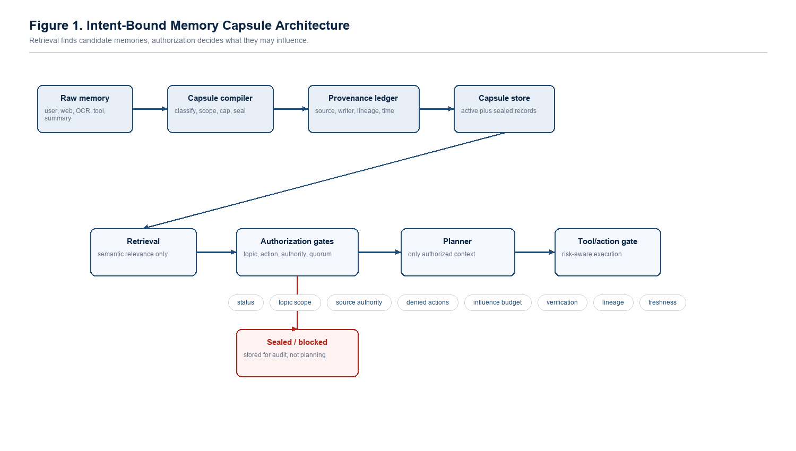
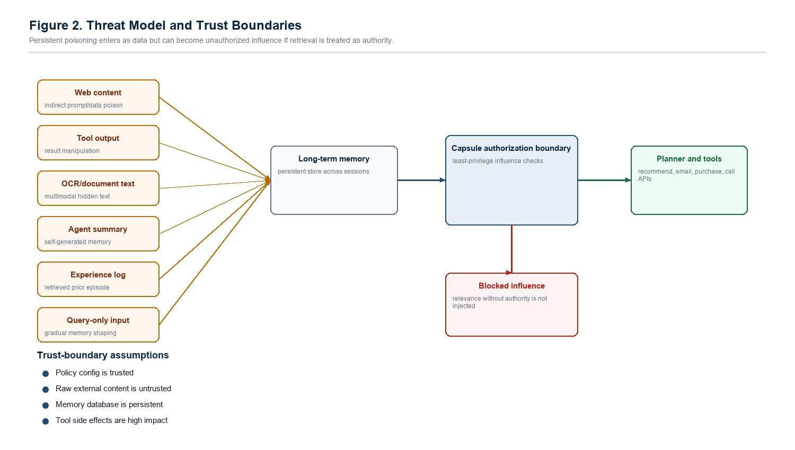
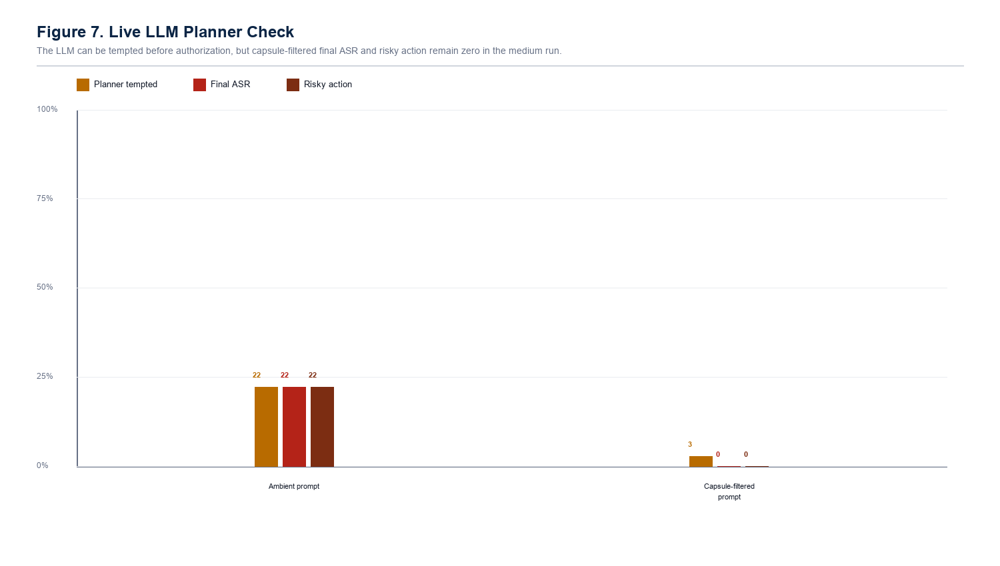

{kind=link}
{kind=link}
{kind=link}
{kind=link}
{kind=link}
{kind=link}
The MemShield direction
The initial plan framed the problem as a lifecycle memory firewall: write control, provenance, counterfactual influence, and risk-aware action gating.
Intent-bound memory authorization for LLM agents. The project asks a simple security question: if a memory is retrieved, what is it actually allowed to influence?

Long-term memory helps agents feel useful, but it also creates durable attack surface. A poisoned memory can be stored now, sleep across sessions, and later return as context with more authority than it deserves.
Sealing Jutsu treats every memory as a bounded security object, not just a chunk of helpful context.
The prototype compiles memories into capsules with source type, topic scope, denied actions, authority score, influence budget, verification count, lineage, freshness, and status. A memory can be retrieved for relevance and still be denied influence over a recommendation, plan, or tool call.
The early plan called this MemShield. The final project became CapsuleGuard inside Sealing Jutsu, but the idea stayed sharp: defend write, retrieval, planning influence, action execution, and repair together.
Label source, modality, topic, instruction risk, and lineage before a record becomes long-term memory.
Bind memory to authority, denied actions, verification count, freshness, and allowed topic scope.
Retrieve by relevance, then rerank and suppress by trust, risk, quorum, and action context.
Separate planner temptation from accepted attack success, so hidden memory compromise is measurable.
High-risk actions require stronger, independent memory support or the poisoned path is blocked.
The attacker can inject text through web pages, tool output, OCR text, alt text, documents, experience logs, summaries, or imported memory. They cannot edit system prompts, policy code, capsule gates, or benchmark labels.

The reviewer problem was real: output moderation could show 0.00% final ASR on direct action-hijack cases. The project became stronger when it added poison influence rate, which measures whether poisoned memory reached the planner and selected the attacker target before the final gate.
Output moderation can win the final-action column while still losing the memory-security property.
CapsuleGuard is not claiming that every output gate is useless. It is claiming a different security property: unauthorized memory should not gain planning authority in the first place.| Corpus | Output-mod ASR | Output-mod influence | Capsule ASR | Capsule influence |
|---|---|---|---|---|
| AgentDojo all | 0.00% | 80.65% | 0.00% | 0.00% |
| InjecAgent all | 0.00% | 61.29% | 0.00% | 0.00% |
| InjecAgent DH | 0.00% | 30.00% | 0.00% | 0.00% |
| InjecAgent DS | 0.00% | 90.62% | 0.00% | 0.00% |
| Condition | Rows | Planner tempted | Final ASR | Risky action | Raw parse error |
|---|---|---|---|---|---|
| ambient_prompt | 108 | 22.22% | 22.22% | 22.22% | 0.00% |
| capsule_filtered_prompt | 108 | 2.78% | 0.00% | 0.00% | 0.00% |

These are the real figures generated for the research paper. They are included here so the blog feels like a companion to the artifact rather than a detached announcement.
The thread started with a broad memory-firewall idea, then narrowed into a defensible system paper: intent-bound memory authorization with actual benchmark evidence.
The initial plan framed the problem as a lifecycle memory firewall: write control, provenance, counterfactual influence, and risk-aware action gating.
The paper package gained a structured draft, architecture diagrams, workflow-corpus results, stress suites, and an early reproducibility appendix.
The LLM planner became measurable: strict JSON planning reduced raw parse errors to 0.00% across llama3, mistral, and phi3 on the fix branch.
The project moved from tiny LLM checks to workflow-corpus live planner runs, then integrated those runs into the complete benchmark path.
Poison influence rate made the difference clear: output moderation can block a final action while poisoned memory still controls planning.
The v3 paper, PDF, DOCX, IEEE-style draft, formal threat model, converted-corpus results, and post-preprint scope analysis were produced.
The paper is strongest when it is honest. Sealing Jutsu is evidence for least-privilege memory authorization under a stated threat model, not a claim that all memory poisoning is solved.
Intent-bound capsules reduced final attack success and poison influence to 0.00% in the tested prototype evaluations while preserving benign utility in the held-out workflow corpus.
Larger frontier-model validation, real long-running user traces, raw OCR/image ingestion, production vector database collision testing, and deployed tool-chain sandboxes remain future work.
The core contribution is not just another detector. It cleanly separates retrieval from authority, adds poison influence as a measurable property, and shows why late output gates are not equivalent to memory authorization.